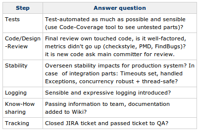
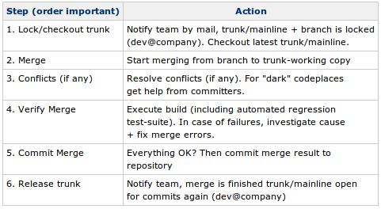

>November 14th, 2010 · No Comments
Metrics are a way to quantify a specific view of a system. They occur in several areas like in source-code (e.g. LOC), process (e.g. number of production issues) or business (e.g. website page-views). Followings lists my “most-favorite” Metrics Antipatterns.
1. Wrong target audience
Metrics don’t act as a feedback cycle for the people who produced the results, but merely end up in top-management number crunching reports. These bottom-up-only metrics don’t add value because they don’t improve the work of the people who “produce” the results. Also unrelated metrics are presented, why should top management be interested in test-coverage? Test-coverage is important, but the related metric “number of regression bugs” would be much more helpful for management audience.
2. No Transparency/Agreement
Team doesn’t understand or hasn’t agreed on metrics setup. The team is controlled by numbers instead that they use them as guidance and feedback loop. Regarding this remember that software developers are specialists in workarounds! In most cases metrics can be bypassed, the number itself looks good but the truth is different, e.g. I can easily increase code-coverage by adding useless unit-tests only executing code without doing any asserts.
3. Holy numbers
All metrics are taken for granted and high and low peaks aren’t questioned. Everyone is panicking because the metrics look so bad. But they were never evaluated as being realistic and never plausible tested. It is not that seldom that numbers were plain wrong and caused not only number but also unnecessary adrenaline peaks…
4. Bad format/Data floods
The metrics aren’t presented well. Even if you have potentially interesting data the insights/implications are just flooded away. For instance instead of using signal-light colours or concentrating on the most-important metrics you are getting overwhelmed by the millions of bare numbers. In the end (as we are humans) everyone will ignore such reports.
Conclusion
Above points seem to be common sense, still in practice metrics are misused a lot. Some observations even lead to the conclusion, that this is done on purpose to fake good results or to give a wrong feeling of control. This bad reputation is a shame because many metrics implemented correctly are an objective, cost-effective and powerful part of your feedback-loop. They also can be highly motivating because you have a target of improvement (e.g. less code-structure warnings, lowering production bugs, increase test-coverage).
Tags: Software Engineering
>September 25th, 2010 · No Comments
To a big degree Software Development involves creative and non-reoccuring actions. On the other side for the repetitive tasks you want to save time and increase quality with automation tools (scripts, build-tool, reporting). These should be a key part of your development/deployment/production cycle (building software, running tests, monitoring etc.). Still you also have to cover reoccuring tasks which are hard to automate and need human interaction, like:
- Rolling out releases (most often each release is unique and needs different changes in several orders on system environment).
- Implementing features, marking them as ‘done’.
- QA process, from testing to approval for production.
- Upgrading procedures.
- etc. …
I’ve always found such repetitive tasks hard to remember (especially when they spawn over a wider range of time). The result was, that sometimes steps were missing or were executed in the wrong order. After all costly and annoying afterwork was necessary.
Good old-style Checklists
Even highly skilled professionals hardly memorize every detail of execution steps and order (humans tend to be very bad at fulfilling repetitive tasks 100% correctly). To follow better a proven procedure checklist can help a lot. Their setup is cheap and following them can avoid to miss steps.
Sample checklist: Marking feature ‘done’
General reminder, no fixed order:

Sample checklist: Merging Branch to Mainline
Sequential, fixed order:

Advantages
Checklists:
- They improve awareness and common understanding of process
- New team members can be introduced better to current process.
- Relieving poor human memory.
- Increase of both efficiency and quality (less afterwork of forgotten tasks).
- Good cost/benefit ratio.
Of course it is important to not go overkill with checklists and list every milli-second step and fix the process (we’re not a car-factory dude!).
Lightweight Tooling
Checklists should be easy to to create, view, reset and follow (as foundation a wiki is perfect here). Often it is sufficient to have a simple table, because it lists all the steps sequentially and you can add notes to it. When there is a more complicated workflow an activity-diagram is better choice. Once you found a proven procedure, checklists tend to not change often, printing and pinning them up works also fine.
Tags: Software Engineering
While browsing through open-source project sonar’s test-code I noticed that they had package imports with Mockito namespace. What I noticed was that the mocking test-code looked similar to easymock but less cluttered and better readable. So I gave Mockito (version was 1.8.3 back then) a try when implementing new test-cases and did not regret it :).
Easymock before
Around 2005 there were several mocking frameworks available. The main reason I chose to work with easymock was that it was both powerful and refactoring friendly. It supports automatic safe refactorings well because the expectations on method calls aren’t setup as a loose string-snippet but on statically typed info (method call expectations are directly bound to the object-type).
Though I found easymock great and made stubbing and mocking much easier as before, I found it had some drawbacks (speaking of version 2.5):
- The mocking/stubbing of interfaces vs. classes is not transparent. It is done through different Main-classes (EasyMock + classextension.EasyMock). This implied that mixing mocking both interfaces and classes inside one test-class followed in cluttered code and importing hell.
- The error messages of easymock are confusing sometimes. Often it is not clear whether the test-case has failed or easymock was used wrong (e.g. forgetting to call replay()).
- The mandatory call of replay() after having setup the mocked object always felt redundant and made test-case longer.
- The non-clear separation between setting up a mock and verifying it. Setting up a mock added also a verification on all expectations as soon as you called verify(). When writing + reading test-code this always confused me, because you already had to cope with verify logic in the setup part of the test-case.
Mockito after
The guys of Mockito say that they were inspired by Easymock and indeed you see its heritage. After having used it for about 3 months now so far the hands-on impressions are great and I now exclusively use Mockito for writing unit-tests.
My positive experiences were:
- Test-code still is safe in regard of using static-typed based automatic refactorings.
- Transparency of classes vs. interfaces. In both cases you call Mockito.mock(MyInterface.class) or Mockito.mock(MyClass.class).
- Clear seperation between setting up a mock and verifiying it. This feels more intuitive and the clear setup/excercise/verify test-code order is preserved.
- Helpful error message, when an assertion wasn’t met or the tool guessed a framework usage error.
- The naming of methods is intuitive (like when(), thenReturn()).
- When earlier I used the real domain-objects as test-data (i.e. by filling data through setters/constructors), now I use mockito to stub them (i.e. stubbing the getters). Domain code logic has now much less impact on test-runs.
- Nice short, straightforward documentation.
- A great name + logo ;)
In summary: The mockito folks did a great job (they took the nice ideas from Easymock creator and improved its drawbacks). Now looking at old test-code using Easymock I subjectively need much more time to grasp what the intent of the test is. With Mockito the test-cases read more like a clear sequential “requirements story” like test-cases always should.
Migration of test-code
If you are already using easymock the tool switch is amazingly quick. Following migration path helped me:
- Give yourself and your colleagues around two weeks investing time to work with the tool and get comfortable with it. Write all your new test-classes with Mockito.
- If you like it make the switch: Explicitly communicate that using the old mocking framework is deprecated (if possible use static code analysis tools where you can mark severaly packages deprecated (org.easymock.*)). Now usage of Mockito for new test-classes should be mandatory.
- If you have already big test-codebase I do NOT recommend a big-bang test-code migration. Such migration work is time consuming and boring. Therefore taking the incremental approach is better: Only migrate Easymock code to Mockito in case you anyway touch the class, i.e. are modifying or adding test-cases.
Looking at the test-migrations I did so far, migrating Easymock code to Mockito is quite straightforward. Get rid of all replay(), verify() calls and adjust to the slight API changes. The only thing you have to watch out for more are the explicit verification on mocked-calls. Easymock did implicitly verify all expectations when calling verify() on the mock-object, on Mockito side you explicitly have to call verifications on each method. The same counts for strict mocks. You have to add respective verifications.
Tags: Continous Integration · Software Engineering · Technologies/Tools